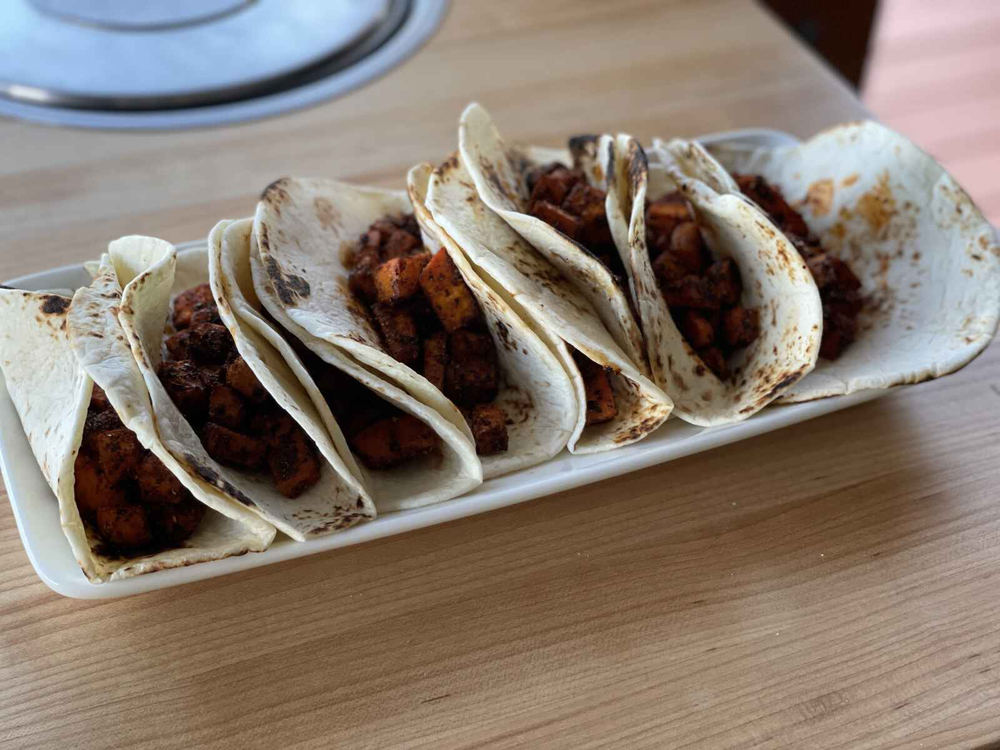
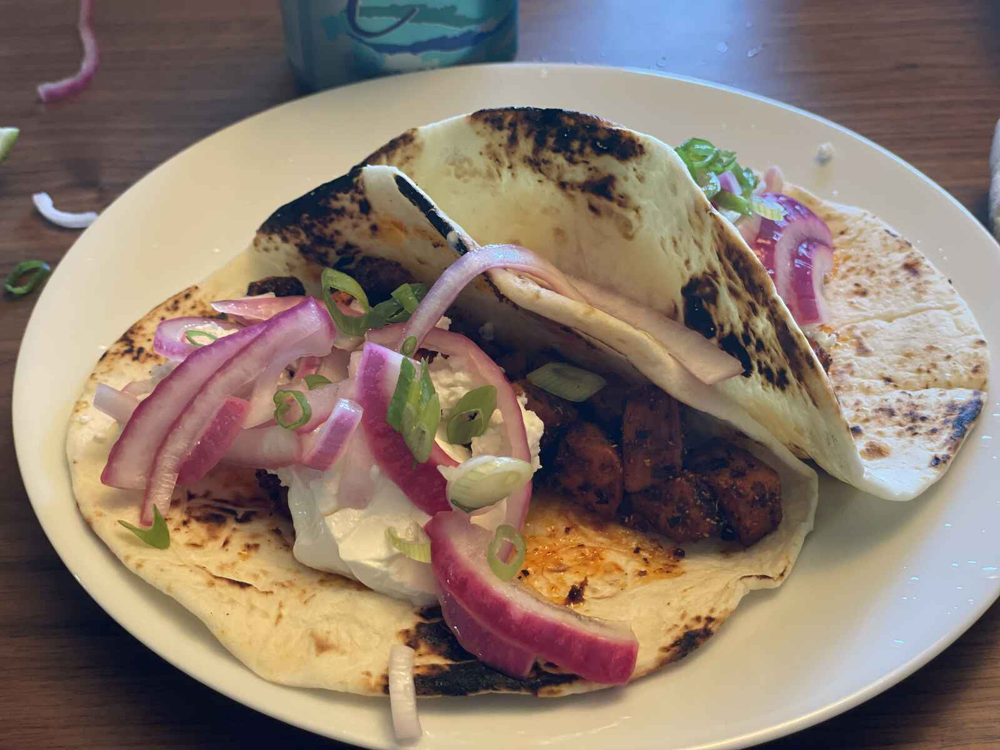
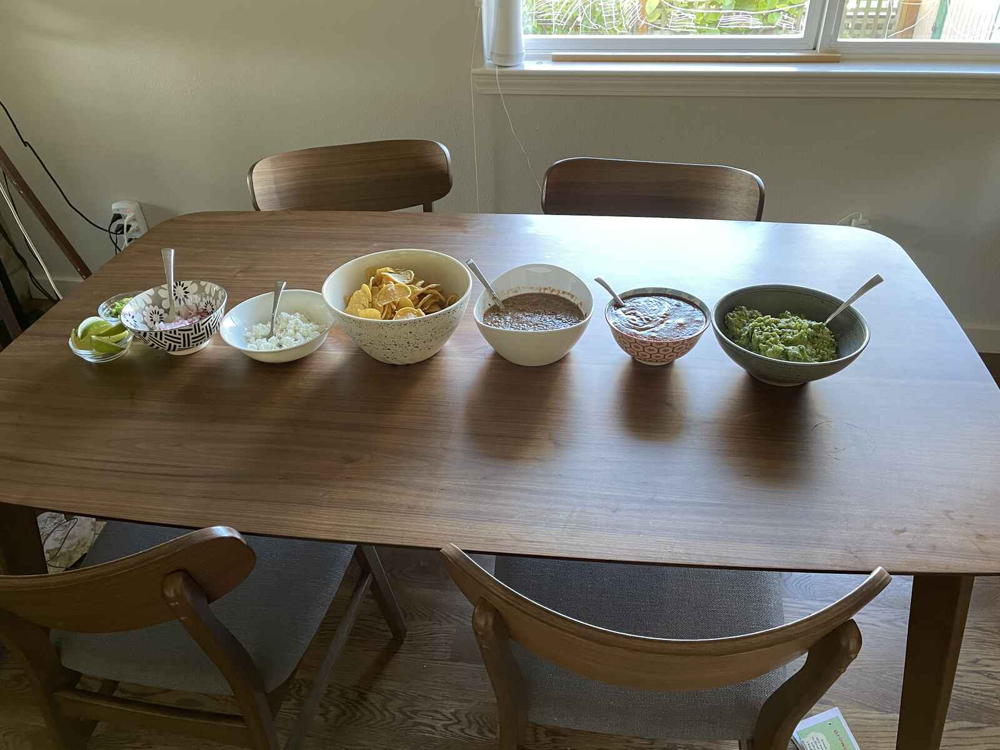

Sweet Potato Tacos & Salsa
Today is one of those days where I woke up at 5:30 AM filled with the kind of existential dread that only millenials feel like they know (it’s OK millenials, Generation X is used to being forgotten) and now it’s nearly 8 PM and I worked all day, cooked for two hours, haven’t even showered, but here I am, trying to figure out a way to talk about sweet potato tacos.
Don’t worry — I took a nap earlier. Unless you’re my boss, then I definitely fucking wrote all that code I was supposed to write. But if you’re not, I took a drool-on-the-pillow, wake-up-with-a-start nap this afternoon and it was everything I dreamed it could be.

See I wasn’t planning on spending two hours in the kitchen. I was just gonna pop up there and whack some fucking sweet potatoes in the oven (while yelling to my kids “Yo dogs, these potatoes are fukkin’ sweet brah!”), and then bang ’em in some tortillas, but I guess I needed to spend some quality time cutting the shit out of things?
If I had to figure out a specific point at which this entire fucking enterprise went South I’d say it was probably a few weeks ago when I went out to dinner with my wife and her friend after we were all fully vaccinated and got some Mexican food. (First meal inside with more than just my partner in over a goddamn shitty fucking year!) We got chips and salsa and guacamole and one of the salsas was a salsa macha, and it was fucking great. The problem is that since then I’ve had the idea of salsa macha in the back of head for a bit of time.

And then today! Today I was getting out the bread to make the kids sandwiches for lunch and I saw a bag of roasted peanuts I had bought for some reason I can’t really remember. (Isn’t it fun that after 15 months my kids still don’t really go to school full time? Let me tell you IT’S A FUCKING NON STOP GODDAMN LAFF RIOT.) Anyway the site of these orphaned peanuts haunted me for the rest of the afternoon until I went upstairs after I was done working and said fuck it, I’m making salsa macha.
Salsa macha is sort of like an Asian hot chili oil that you put in the blender — a bunch of whole dried chilis, seeded and torn up, a handful of peanuts and a bit of sesame seeds, some garlic, sugar, salt and vinegar. I put everything except the vinegar in a sauce pot and then added just enough oil to cover it all, and placed it over a medium flame until it started to sizzle, then I had to back up off of it and sit my cup down, Tanquery and chronic, yeah I’m fucked up… oh wait, this isn’t gin and juice. But yeah, I turned the heat down and let it go until the chilies got a little puffy and dark, and the nuts and seeds were well roasted. If you notice the garlic starting to brown too much you should pull it out because burned garlic is fucking nasty as shit. Once it was cool I put it in the blender and added some apple cidar vinegar and let it go until it was smooth, adding water until it was the right consistency. I know, I know, a lot of people want you to use a food processor since it’s not supposed to be pureeed, but like, you know what? I don’t go down to where they work and tell them they’re doing it wrong, so like, whatever. You’re not my fucking manager.
The idea here was also inspired by the sweet potato/peanut soup they make in Ethiopia. I said it before, and I’ll say it again — I’m fucking international yo.
So yeah, that took some time. Then I had to make chili powder. Well. I didn’t have to make it, but like the shit you buy in the store always has too much salt in it or like who the fuck knows how long it’s been sitting around and like why does it sometimes smell like dirty shoes when you cook with it? And then I had to cut the sweet potatoes up and toss them in the chili powder that I just made with some olive oil and salt and put them in the oven.

Before that though I had to fucking pickle some onions. I guess I didn’t have to pickle them, but who the fuck wants to eat a sweet potato taco with some spicy ass peanut salsa with nothing to distract from the richness of the potato and the salsa? Not this fucking chump.
Then I made guacamole since I had some avocados and they were perfectly ripe and did you know I once ate a ripe avocado like it was juice box? Like bit the top off, rolled it around and sucked out the meat of the avocado? You can pay for college in a lot of different ways my friends.
Well then it’s six fucking thirty and I’ve got a table full of food and like lets eat right?
YOU DUMB FUCKING BASTARDS. HAVE YOU EVER FUCKING READ THIS BLOG?
NO! MY ASS HAD TO GET THE FUCK BACK UP AND MAKE TWO FUCKING CHEESE QUESADILLAS.
I wish I was kidding. I need a vacation.


{kind=link}